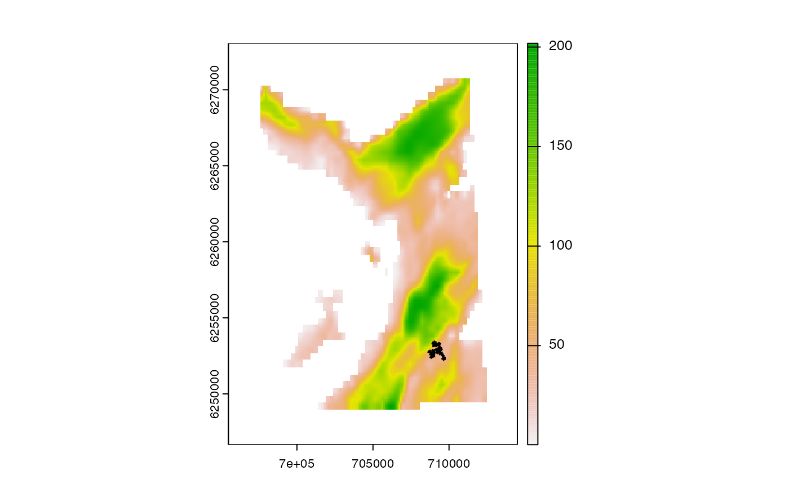

This function implements the path-reconstruction algorithm.
Particle samples from the particle filter, provided in any format accepted by .pf_history_list(). Particle samples must contain cell_past and cell_now columns.
(optional) If .return = "long", a bathymetry SpatRaster can be supplied to define cell coordinates (see pf_path_pivot()).
(optional) If .return = "long", .obs and .cols are a data.table and a character vector of column names in .obs to match onto the output (see pf_path_pivot()).
A character that defines the return format:
long specifies a long-format data.table that defines path IDs, time steps and associated locations (see pf_path_pivot()).
wide specifies a wide-format data.table, with:
one row for each path;
one column for each time step (named x1, x2, etc.);
User output control (see patter-progress for supported options).
The function returns a long- or wide-format data.table (see .return).
The path reconstruction algorithm 'chains' sequential particle samples into movement paths. This function evolved from flapper::pf_simplify(). This implementation uses the fast collapse::join() function.
The forward filtering--backward sampling algorithm samples locations (particles) that represent the possible locations of an individual through time, accounting for all data and the individual's movement.
To set up data, use pat_setup_data().
pf_forward() implements the forward filter:
To set up an observations timeline, use pf_setup_obs().
For proposal (movement) models, see pf_propose.
For likelihood functions, to evaluate the likelihood of the data at proposal locations, see pf_lik.
For sampling functions, to (re)sample plausible proposal locations, see pf_sample.
For tuning parameters, see pf_opt.
pf_backward_*() refines outputs from the forward filter:
pf_backward_killer() removes dead-ends;
pf_backward_sampler() implements the backward sampler;
To reconstruct movement paths from particle samples, use pf_path().
To map emergent patterns of space use, use pf_coord() plus a map_*() function, such as map_pou(), map_dens() and/or map_hr_().
For additional utilities, see supporting pf_*() functions, such as pf_plot_history(), pf_files() and pf_files_size().
#### Set up examples using pre-defined datasets
gebco <- dat_gebco()
obs <- dat_obs()
out_pfbk <- dat_pfbk()
pfbk_folder <- dat_pfbk_src()
#### Example (1): Implement pf_path() from `pf` object
p1 <- pf_path(out_pfbk$history)
#> `patter::pf_path()` called @ 2024-01-19 11:43:34...
#> ... Setting up...
#> ... Processing history[[1]]...
#> ... Defining chain text...
#> ... Evaluating chain text...
#> ... Reorientating matrix via pf_path_pivot()...
#> `patter::pf_path()` call ended @ 2024-01-19 11:43:34 (duration: ~0 sec(s)).
#### Example (2): Implement pf_path from parquet files
p2 <- pf_path(pf_files(pfbk_folder))
#> `patter::pf_path()` called @ 2024-01-19 11:43:34...
#> ... Setting up...
#> ... Processing history[[1]]...
#> ... Defining chain text...
#> ... Evaluating chain text...
#> ... Reorientating matrix via pf_path_pivot()...
#> `patter::pf_path()` call ended @ 2024-01-19 11:43:34 (duration: ~0 sec(s)).
stopifnot(all.equal(p1, p2))
#### Example (3): Include cell coordinates/obs columns
p3 <- pf_path(out_pfbk$history, gebco, obs, .cols = "depth")
#> `patter::pf_path()` called @ 2024-01-19 11:43:34...
#> ... Setting up...
#> ... Processing history[[1]]...
#> ... Defining chain text...
#> ... Evaluating chain text...
#> ... Reorientating matrix via pf_path_pivot()...
#> `patter::pf_path()` call ended @ 2024-01-19 11:43:34 (duration: ~0 sec(s)).
head(p3)
#> path_id timestep cell_id cell_x cell_y cell_z depth
#> 1: 1 1 38328 709242.1 6252907 47.83468 73.78
#> 2: 1 2 38330 709442.1 6252907 43.93122 73.32
#> 3: 1 3 37949 709342.1 6253107 52.98276 73.32
#> 4: 1 4 38519 709342.1 6252807 44.46762 73.32
#> 5: 1 5 38139 709342.1 6253007 49.42750 73.55
#> 6: 1 6 38137 709142.1 6253007 59.76520 68.70
#### Example (4): Adjust standard `patter-progress` options
# Use a log.txt file
log.txt <- tempfile(fileext = ".txt")
p4 <- pf_path(out_pfbk$history, .verbose = log.txt)
readLines(log.txt)
#> [1] "`patter::pf_path()` called @ 2024-01-19 11:43:34... "
#> [2] "... Setting up... "
#> [3] "... Processing history[[1]]... "
#> [4] "... Defining chain text... "
#> [5] "... Evaluating chain text... "
#> [6] "... Reorientating matrix via pf_path_pivot()... "
#> [7] "`patter::pf_path()` call ended @ 2024-01-19 11:43:34 (duration: ~0 sec(s)). "
unlink(log.txt)
# Suppress `.verbose`
p4 <- pf_path(out_pfbk$history, .verbose = FALSE)
# Suppress progress bar
pbo <- pbapply::pboptions(type = "n")
p4 <- pf_path(out_pfbk$history)
#> `patter::pf_path()` called @ 2024-01-19 11:43:34...
#> ... Setting up...
#> ... Processing history[[1]]...
#> ... Defining chain text...
#> ... Evaluating chain text...
#> ... Reorientating matrix via pf_path_pivot()...
#> `patter::pf_path()` call ended @ 2024-01-19 11:43:34 (duration: ~0 sec(s)).
pbapply::pboptions(pbo)
#### Example (5): Examine outputs
# Load packages
require(data.table)
require(dtplyr)
require(dplyr, warn.conflicts = FALSE)
# Compute (Euclidean) distances between sequential samples
gebco <- dat_gebco()
p5 <-
p3 |>
group_by(path_id) |>
mutate(dist = dist_along_path(cbind(cell_x, cell_y))) |>
as.data.table()
max(p5$dist, na.rm = TRUE)
#> [1] 412.3106
# Visualise example path
terra::plot(gebco)
path_1 <- p5[p5$path_id == 1, ]
s <- seq_len(nrow(path_1))
arrows(x0 = path_1$cell_x[s], x1 = path_1$cell_x[s + 1],
y0 = path_1$cell_y[s], y1 = path_1$cell_y[s + 1],
length = 0.02)

#### Example (6): Change output format
p6 <- pf_path(out_pfbk$history, .return = "wide")
#> `patter::pf_path()` called @ 2024-01-19 11:43:34...
#> ... Setting up...
#> ... Processing history[[1]]...
#> ... Defining chain text...
#> ... Evaluating chain text...
#> `patter::pf_path()` call ended @ 2024-01-19 11:43:34 (duration: ~0 sec(s)).
str(p6)
#> Classes ‘data.table’ and 'data.frame': 100 obs. of 25 variables:
#> $ x1 : int 38328 38328 38328 38328 38328 38328 38328 38328 38328 38328 ...
#> $ x2 : int 38330 38330 38330 38330 38330 38330 38330 38330 38330 38330 ...
#> $ x3 : int 37949 37949 37949 37949 37949 37949 37949 37949 37949 37949 ...
#> $ x4 : int 38519 38519 38519 38519 38519 38519 38519 38519 38519 38519 ...
#> $ x5 : int 38139 38139 38139 38139 38139 38139 38139 38139 38139 38139 ...
#> $ x6 : int 38137 38137 38137 38137 38137 38137 38137 38137 38137 38137 ...
#> $ x7 : int 38518 38518 38518 38518 38518 38518 38518 38518 38518 38518 ...
#> $ x8 : int 38140 38140 38140 38140 38140 38140 38140 38140 38140 38140 ...
#> $ x9 : int 37947 37947 37947 37947 37947 37947 37947 37947 37947 37947 ...
#> $ x10: int 37759 37759 37759 37759 37759 37759 37759 37759 37759 37759 ...
#> $ x11: int 37379 37947 37379 37947 37379 37379 37379 37379 37947 37947 ...
#> $ x12: int 37377 37945 37377 37945 37377 37377 37377 37377 37945 37945 ...
#> $ x13: int 37566 37947 37566 37947 37566 37566 37566 37566 37947 37947 ...
#> $ x14: int 37947 37376 37947 37376 37947 37947 37947 37947 37568 37568 ...
#> $ x15: int 37948 37754 37948 37754 37948 37948 37948 37948 38138 38138 ...
#> $ x16: int 37569 37757 37946 37757 37946 37569 37946 37946 38328 38140 ...
#> $ x17: int 37759 38329 38327 38329 38327 37759 38327 38327 37947 38518 ...
#> $ x18: int 37757 38520 37946 38520 37946 37757 37946 37946 38328 38709 ...
#> $ x19: int 37565 38711 37568 38711 37568 37565 37568 37568 38709 38707 ...
#> $ x20: int 37184 38903 37187 38903 37187 37184 37187 37187 38707 38519 ...
#> $ x21: int 37565 38710 37566 38710 37566 37565 37567 37567 38327 38707 ...
#> $ x22: int 37375 38522 37187 38522 37187 37752 37186 37568 38709 38518 ...
#> $ x23: int 36994 39093 37186 39093 36804 37562 37375 37187 39090 39087 ...
#> $ x24: int 36802 38714 37375 38714 36425 37369 37373 36995 39471 39278 ...
#> $ x25: int 36422 38145 37184 38712 36237 37180 37562 37183 39662 39089 ...
#> - attr(*, ".internal.selfref")=<externalptr>